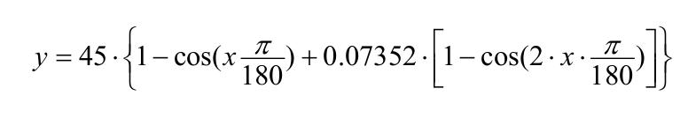
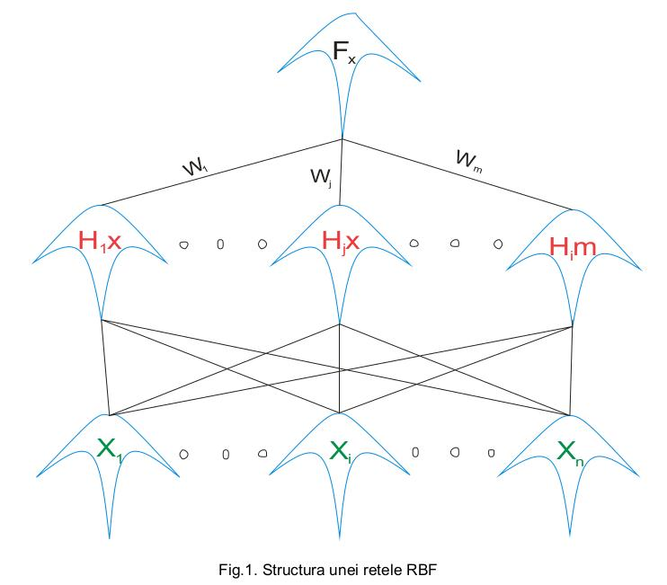
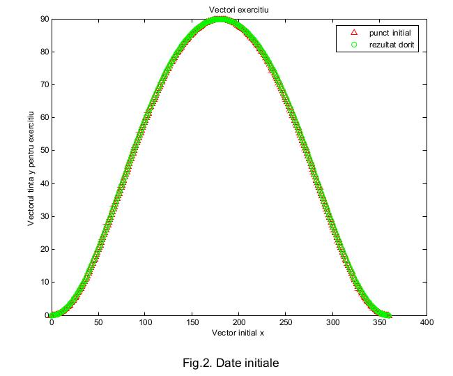
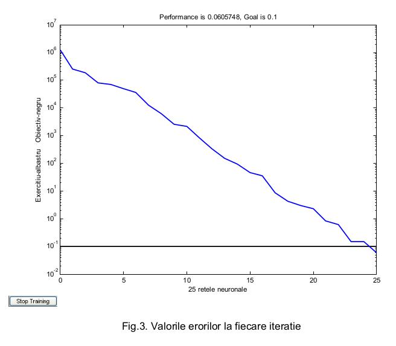
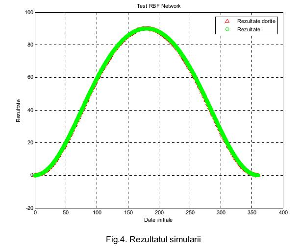
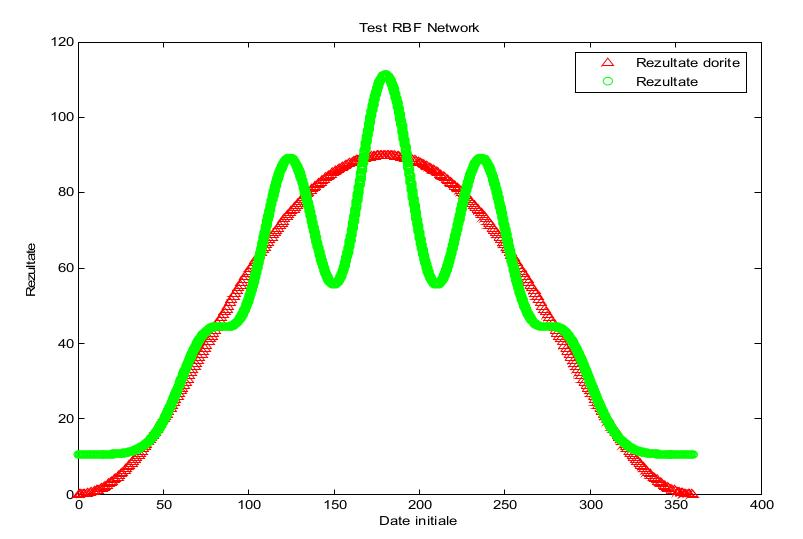
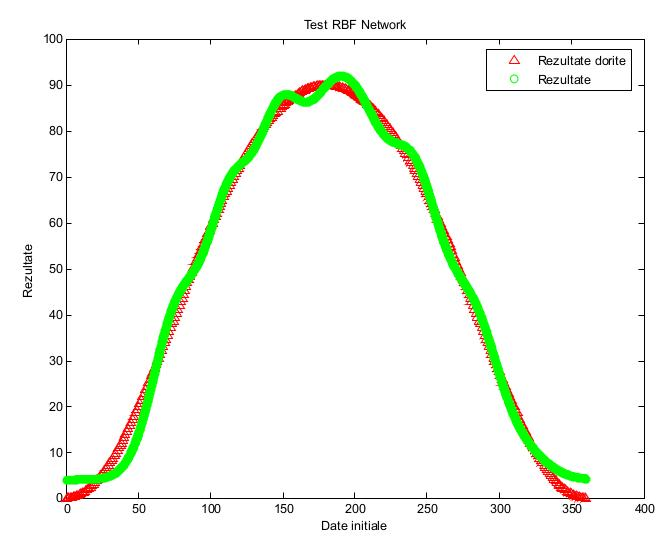

Metoda descrisă pune accentul pe reținerea a cât mai multe caracteristici a funcției RBF(radial basis function).
Am folosit MATLAB® pentru a implemeta funcția de analiză RBF pentru funcția care descrie urmatoarea variație de parametrii:
Procesul de educare şi testare a unei rețele neuronale RBF cuprinde următoarele etape:
Astfel se pot descrie pentru aplicația aleasă urmatorii paşi:
1) Căile de educare şi testare
2) Arhitectura rețelei neuronale RBF
Rețelele neuronale sunt în principiu o clasă de funcŧii ce pot fi implementate pentru orice fel de model (linear sau neliniar) şi în orice fel de rețea (cu un singur strat sau mai multe straturi).
Rețelele RBF sunt rețele formate din două straturi : nodurile de intrare, neuroni ascunşi cu funcții de bază nonliniare, şi neuroni de ieşire cu funcții de activare liniare sau nonliniare.
3) Căile de educare a rețelei
Având datele de intrare bine precizate şi algoritmul funcției de iesire se vor obține următoarele rezultate reprezentate grafic în figura 2.
4) Arhitectura rețelei neuronale RBF după ce a fost implementat algoritmul de calcul.
Se reprezintă grafic erorile care apar şi rezultatul iterației.
Codul sursă al programului folosit este următorul:
clear allx=[0:1:360];y=45*(1-cos(x*pi/180)+0.07352*(1-cos(2*x*pi/180))); x1=[0:1:360]; y1=45*(1-cos(x*pi/180)+0.07352*(1-cos(2*x*pi/180)));figure plot(x,y,'r^',x1,y1,'go')title('Vectori exercitiu');xlabel('Vector initial x');ylabel('Vectorul tinta y pentru exercitiu');legend({'punct initial','rezultat dorit '})P=[0:0.1:360]; eg1 = 1.0e-1; sc1 = 20;nnsize = 25; df = 5; [ net1, tr1 ] = newrb(x,y,eg1,sc1, nnsize, df );T1=sim(net1,P);figureplot(x1,y1,'r^',P,T1,'go')title('Test RBF Network');xlabel('Date initiale');ylabel('Rezultate');legend({'Rezultate dorite','Rezultate'})Se poate observa că sau folosit 25 de neuroni şi pentru fiecare iterație sa ales varianta cu adăugarea a câte 5 noi neuroni de iterație. Dacă s-ar fi folosit un număr mai mic de neuroni s-ar fi obținut rezultate mult mai depărtate de valoarea impusă prin algoritmul de invățare al rețelei. Se exemplifică în următoarele grafice diferențele obținute pentru 5, 10, neuroni.
Rezultatul simulării:
5 neuroni
10 neuroni
Se poate observa variația fidelității simulării odată cu creşterea numărului de neuroni folosiți de rețeau neuronală. Acest aspect poate fi folosit pentru o mare varietate de aplicații precum: recunoaşterea digitală a feței, detectarea mirosurilor, clasificarea imaginilor din punct de vedere al caracteristicilor de culoare, aplicații de predicție a anumitor fenomene.
BIBLIOGRAFIE
[1] Hyungsuck Cho - Artificial neural network: Theory and applications;
[2] Karim, A. - Introduction to Matlab®, Ohio State University;
[3] Mark, J. - Introduction to Radial Basis Function Networks, Centre for Cognitive Science, University of Edinburgh, 1996;
[4] Yu-Tseh Chi - Function approximation by RBF, Ohio State University;